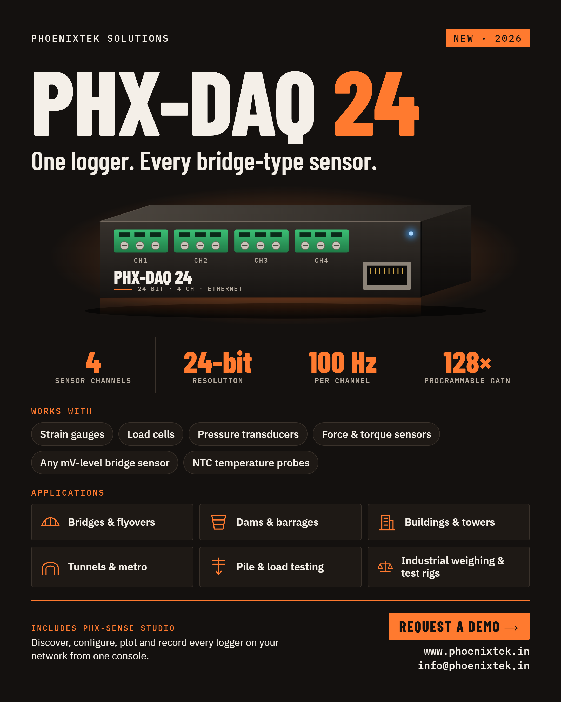

Data acquisition · New 2026
4-channel 24-bit sensor and temperature datalogger
Ethernet-connected logger for strain gauges, load cells, pressure transducers and other bridge-type sensors. One logger. Every bridge-type sensor.

At Phoenixtek Solution we build instruments for engineers who need dependable data from the field. PHX-DAQ 24 puts four 24-bit strain-gauge inputs and four temperature probe inputs on a single module. It samples each strain channel at up to 100 Hz and delivers the data over standard Ethernet using Modbus TCP.
It ships with PHX-Sense Studio, our Windows console. Find every logger on the network, watch live plots, calibrate and zero each channel, and record to CSV, across as many modules as your project needs.
It is built for unattended sites. Configuration and firmware updates are protected by a key, updates roll back automatically if something goes wrong, and each unit reports its own health and restart history.
| Sensor inputs (bridge-type) | |
|---|---|
| Channels | 4, differential, independent |
| Resolution | 24-bit analog-to-digital converter, one per channel |
| Programmable gain | 1, 2, 4, 8, 16, 32, 64, 128 (set per channel) |
| Full-scale input | ±(1 ÷ gain) × excitation voltage. Example: ±7.8 mV/V at 128× gain |
| Sensor excitation | 3.3 V DC per channel, ratiometric measurement: excitation drift and cable voltage drop cancel out. 350 Ω bridges recommended |
| Sensor configurations | Quarter, half and full bridge. Completion resistors are fitted externally, at the sensor |
| Noise / accuracy | TBC (characterisation in progress) |
| Temperature inputs | |
| Channels / sensor | 4 × NTC thermistor, 10 kΩ at 25 °C, β = 3950 (waterproof probes recommended) |
| Update rate | About 1 Hz per channel. A disconnected probe is reported as "no probe", not as a false reading |
| Range / accuracy | TBC |
| Sampling and data | |
| Output rate | 1 to 100 Hz per channel, selectable (default 100 Hz). Each channel can be enabled or disabled |
| Data delivery | Continuous TCP data stream (one active stream client at a time) and Modbus TCP register access. Samples are sequence-numbered so a receiver can detect missing data |
| Communications | |
| Network | 10/100 Mbit/s Ethernet, RJ45. Modbus TCP (port 502), TCP data stream (port 5000), automatic network discovery. DHCP or static IP |
| Wi-Fi | Built-in 2.4 GHz access point (WPA2) for commissioning and as a fallback when Ethernet is unavailable |
| Firmware update | Over the network from PHX-Sense Studio. The unit returns to the previous firmware automatically if an update does not complete correctly |
| Configuration security | Settings, restart, factory reset and firmware update require authentication. Measurement data is readable without authentication |
| Power, environmental and mechanical | |
| Supply | 24 V DC nominal (12 to 28 V DC), screw terminal. Fused, reverse-polarity and surge protected |
| Power consumption | Typically under 3 W at 24 V with all channels streaming |
| Operating temperature | 0 to +50 °C |
| Enclosure | Aluminium enclosure recommended. IP65 when installed in an IP65-rated enclosure with cable glands |
| Dimensions / weight | Depends on the enclosure supplied. TBC |
| Status LED | Blue: Ethernet connected. Green: access point active. Three quick blinks then a pause: ready. Single slow blink: data streaming. Slow red: no network |
Values are design values for Rev A and may be refined after production testing. TBC: to be confirmed.
Windows console supplied with every PHX-DAQ 24 for setup, monitoring and recording. Requires Windows 10 or 11 (64-bit) and a network connection to the logger.
PHX-DAQ 24 exposes its measurements over standard Modbus TCP so it can be read by SCADA systems, PLCs and custom software. A continuous TCP data stream is available for high-rate acquisition.
| Part | PHX-DAQ 24 — 4-channel sensor and temperature datalogger, with PHX-Sense Studio |
| Accessories | NTC temperature probes, bridge-completion junction boxes, shielded cable, 24 V DC power supply. Available on request |
| Support | Integration guide, calibration guidance and pilot deployments |
Talk to us about using PHX-DAQ 24 on your bridge, dam, tunnel or test rig.
Specifications are subject to change without notice. PHX-DAQ 24 and PHX-Sense Studio are products of Phoenixtek Solution. Document DS-PHXDAQ24, Rev A, September 2026.